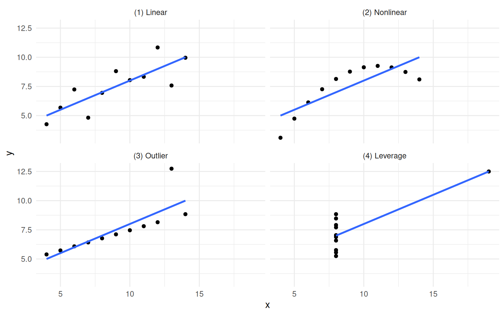
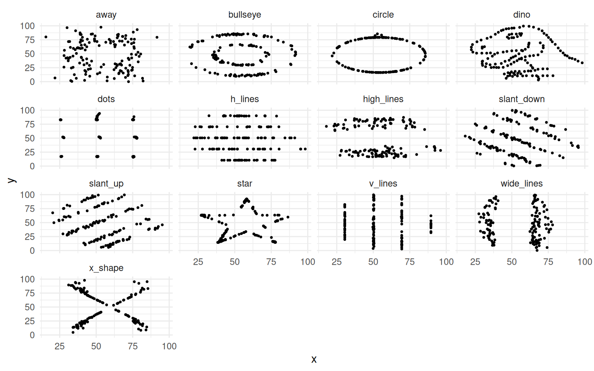
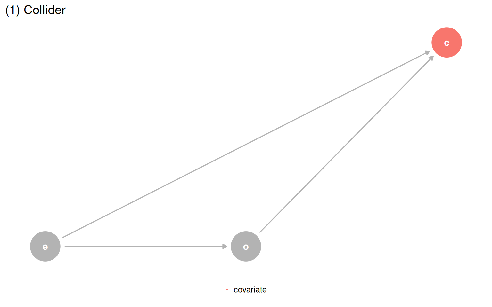
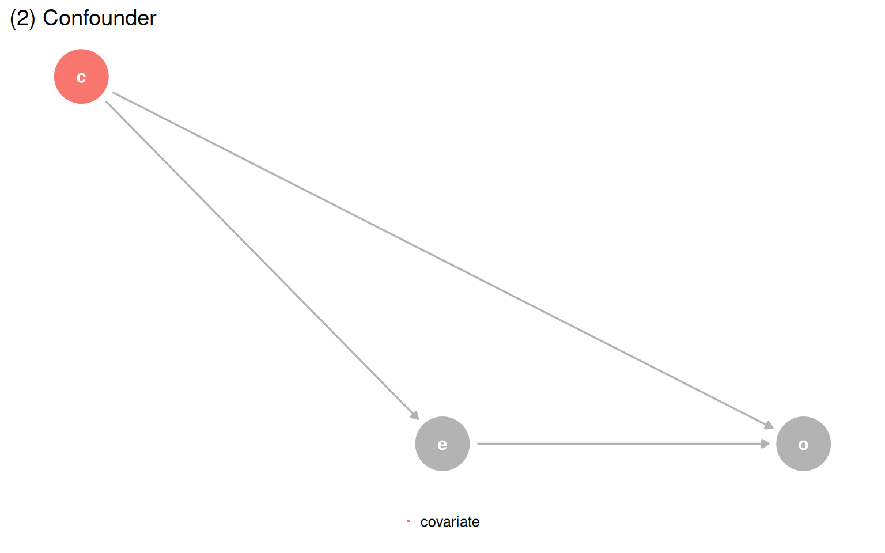
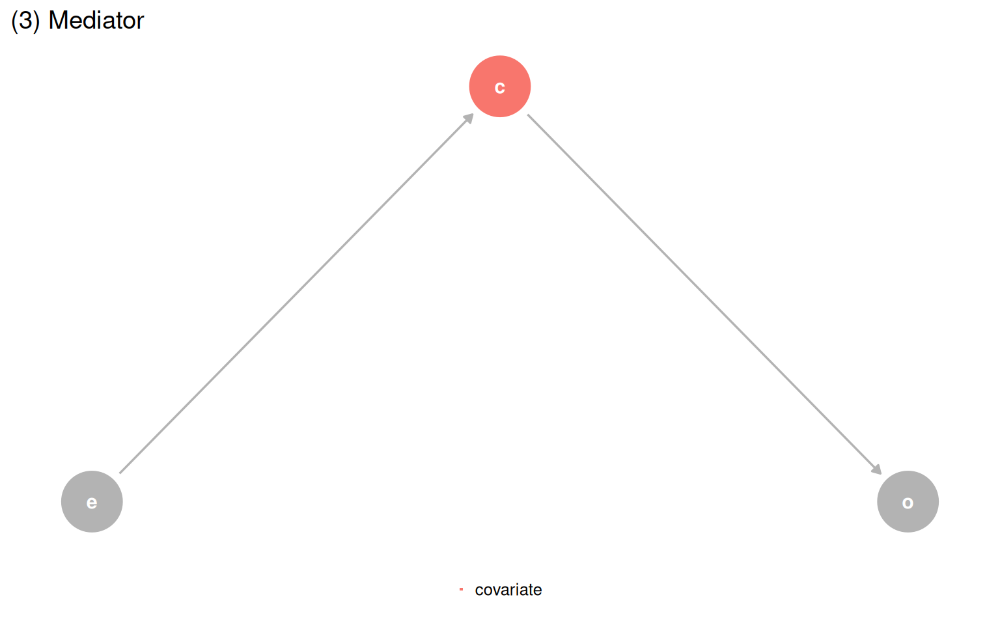
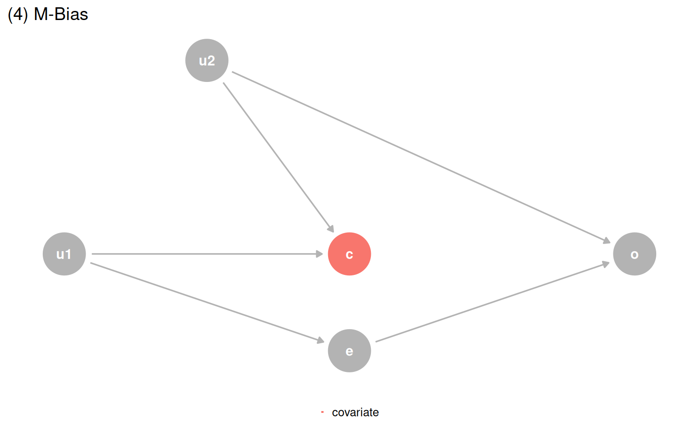
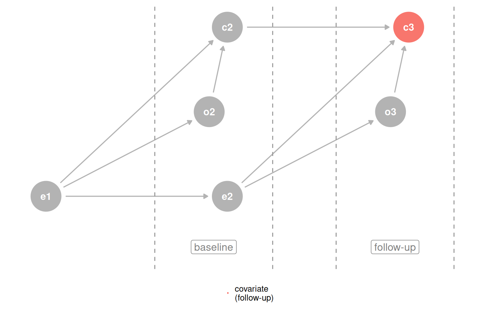
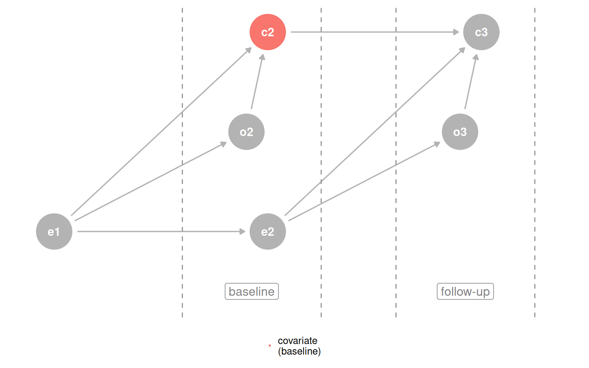
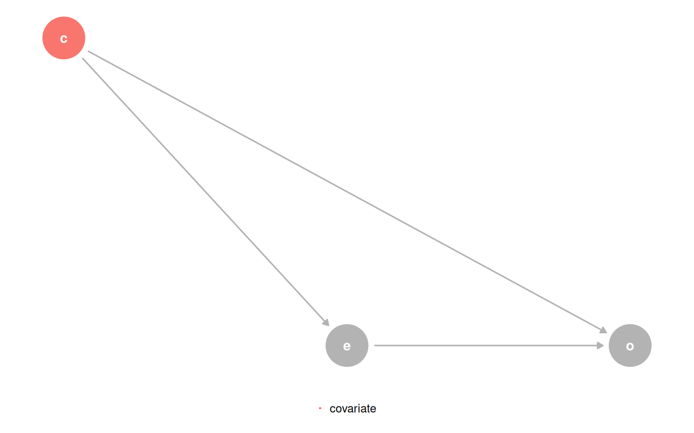
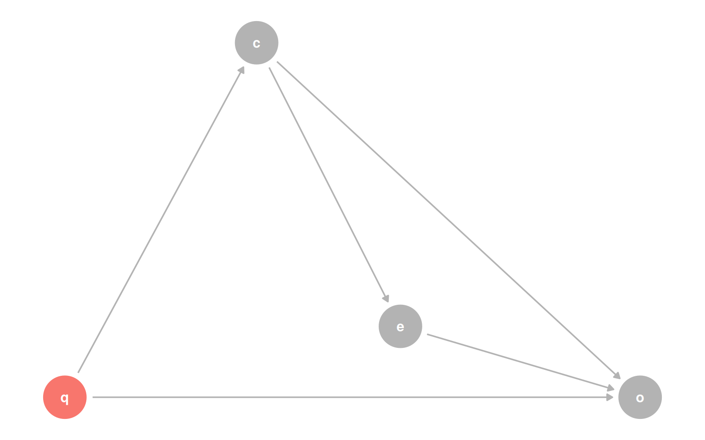

Show code
library(quartets)
library(tidyverse)
library(ggdag)
anscombe_quartet |>
ggplot(aes(x, y)) +
geom_point() +
geom_smooth(method = "lm", se = FALSE, formula = y ~ x) +
facet_wrap(~dataset) +
theme_minimal()
Statistics cannot carry the full weight of causal inference on its own. This chapter makes that case through three related ideas: the Causal Quartet, time-ordering as a structural heuristic, and the limits of predictive metrics. Each one reveals a different way that data alone misleads you into the wrong answer.
The chapter opens by extending a well-worn lesson. Anscombe’s Quartet showed in 1973 that identical summary statistics can hide wildly different data shapes. The Datasaurus Dozen drove the same point home visually. Causal inference goes further: even when two datasets look the same and have the same correlations, their causal structures can be completely different, and the right model depends on which structure you are working with.
library(quartets)
library(tidyverse)
library(ggdag)
anscombe_quartet |>
ggplot(aes(x, y)) +
geom_point() +
geom_smooth(method = "lm", se = FALSE, formula = y ~ x) +
facet_wrap(~dataset) +
theme_minimal()
library(datasauRus)
datasaurus_dozen |>
summarise(cor = round(cor(x, y), 2), .by = dataset)# A tibble: 13 × 2
dataset cor
<chr> <dbl>
1 dino -0.06
2 away -0.06
3 h_lines -0.06
4 v_lines -0.07
5 x_shape -0.07
6 star -0.06
7 high_lines -0.07
8 dots -0.06
9 circle -0.07
10 bullseye -0.07
11 slant_up -0.07
12 slant_down -0.07
13 wide_lines -0.07datasaurus_dozen |>
ggplot(aes(x, y)) +
geom_point(size = 0.6) +
facet_wrap(~dataset) +
theme_minimal()
The Causal Quartet pushes this further. Four datasets have the same statistics and the same visualizations, but their underlying causal structures are different. The only thing that changes is the role of a third variable, covariate. Is it a confounder, a mediator, or a collider? Data cannot answer that question.
causal_quartet |>
mutate(dataset = as.integer(factor(dataset))) |>
mutate(
exposure = scale(exposure),
outcome = scale(outcome),
.by = dataset
) |>
ggplot(aes(exposure, outcome)) +
geom_point() +
geom_smooth(method = "lm", se = FALSE, formula = y ~ x) +
facet_wrap(~dataset) +
theme_minimal()When you fit models with and without covariate, the unadjusted estimate is 1.00 across all four datasets, and the correlation between exposure and covariate is 0.70 across all four as well. But the adjusted estimates differ, and the correct one depends entirely on background knowledge about the causal structure.
library(gt)
causal_quartet |>
nest_by(dataset = as.integer(factor(dataset))) |>
mutate(
ate_x = coef(lm(outcome ~ exposure, data = data))[[2]],
ate_xz = coef(lm(outcome ~ exposure + covariate, data = data))[[2]],
cor = cor(data$exposure, data$covariate)
) |>
select(-data) |>
ungroup() |>
gt() |>
fmt_number(columns = -dataset) |>
cols_label(
dataset = "Dataset",
ate_x = md("Not adjusting for `covariate`"),
ate_xz = md("Adjusting for `covariate`"),
cor = md("Correlation of `exposure` and `covariate`")
)exposure on outcome in the Causal Quartet, with and without adjustment.
| Dataset | Not adjusting for covariate |
Adjusting for covariate |
Correlation of exposure and covariate |
|---|---|---|---|
| 1 | 1.00 | 0.55 | 0.70 |
| 2 | 1.00 | 0.50 | 0.70 |
| 3 | 1.00 | 0.00 | 0.70 |
| 4 | 1.00 | 0.88 | 0.70 |
A common epidemiological heuristic says to include a variable if it changes the effect estimate by more than 10%. Every example in the Causal Quartet clears that threshold, so the rule would tell you to adjust in all four cases. That is wrong for at least two of them.
causal_quartet |>
nest_by(dataset = as.integer(factor(dataset))) |>
mutate(
ate_x = coef(lm(outcome ~ exposure, data = data))[[2]],
ate_xz = coef(lm(outcome ~ exposure + covariate, data = data))[[2]],
percent_change = scales::percent((ate_x - ate_xz) / ate_x)
) |>
select(dataset, percent_change) |>
ungroup() |>
gt() |>
cols_label(dataset = "Dataset", percent_change = "Percent change")| Dataset | Percent change |
|---|---|
| 1 | 45% |
| 2 | 50% |
| 3 | 100% |
| 4 | 13% |
The only path forward is a DAG. Once you know which structure you are in, you just ask the DAG for the correct adjustment set.
make_dag_plot <- function(dag_obj, title_text) {
dag_obj |>
tidy_dagitty() |>
mutate(covariate = if_else(label == "c", "covariate", NA_character_)) |>
ggplot(aes(x = x, y = y, xend = xend, yend = yend)) +
geom_dag_point(aes(color = covariate)) +
geom_dag_edges(edge_color = "grey70") +
geom_dag_text(aes(label = label)) +
theme_dag() +
coord_cartesian(clip = "off") +
theme(legend.position = "bottom") +
ggtitle(title_text) +
guides(color = guide_legend(
title = NULL,
keywidth = unit(1.4, "mm"),
override.aes = list(size = 3.4, shape = 15)
)) +
scale_color_discrete(breaks = "covariate", na.value = "grey70")
}
make_dag_plot(quartet_collider(x = "e", y = "o", z = "c"), "(1) Collider")
make_dag_plot(quartet_confounder(x = "e", y = "o", z = "c"), "(2) Confounder")
make_dag_plot(quartet_mediator(x = "e", y = "o", z = "c"), "(3) Mediator")
quartet_m_bias(x = "e", y = "o", z = "c", u1 = "u1", u2 = "u2") |>
tidy_dagitty() |>
mutate(covariate = if_else(label == "c", "covariate", NA_character_)) |>
ggplot(aes(x = x, y = y, xend = xend, yend = yend)) +
geom_dag_point(aes(color = covariate)) +
geom_dag_edges(edge_color = "grey70") +
geom_dag_text(aes(label = label)) +
theme_dag() +
coord_cartesian(clip = "off") +
theme(legend.position = "bottom") +
ggtitle("(4) M-Bias") +
guides(color = guide_legend(
title = NULL,
keywidth = unit(1.4, "mm"),
override.aes = list(size = 3.4, shape = 15)
)) +
scale_color_discrete(breaks = "covariate", na.value = "grey70")



| Data generating mechanism | Correct model | Correct effect |
|---|---|---|
| (1) Collider | outcome ~ exposure |
1 |
| (2) Confounder | outcome ~ exposure + covariate |
0.5 |
| (3) Mediator | Direct: outcome ~ exposure + covariate; Total: outcome ~ exposure |
0 / 1 |
| (4) M-Bias | outcome ~ exposure |
1 |
Building a correct DAG from scratch is hard. When background knowledge is thin, time-ordering gives you a cheap but useful defensive strategy: a cause must come before its effect, so a variable measured before the outcome cannot be a descendant of it. Controlling for baseline covariates protects you from one common source of collider bias.
d_coll_time <- quartet_time_collider(
x0 = "e0", x1 = "e1", x2 = "e2", x3 = "e3",
y1 = "o1", y2 = "o2", y3 = "o3",
z1 = "c1", z2 = "c2", z3 = "c3"
)
plot_time_dag <- function(dag, highlight_node, legend_label) {
dag |>
tidy_dagitty() |>
mutate(covariate = if_else(label == highlight_node, legend_label, NA_character_)) |>
ggplot(aes(x = x, y = y, xend = xend, yend = yend)) +
geom_dag_point(aes(color = covariate)) +
geom_dag_edges(edge_color = "grey70") +
geom_dag_text(aes(label = label)) +
theme_dag() +
coord_cartesian(clip = "off") +
theme(legend.position = "bottom") +
geom_vline(xintercept = c(2.6, 3.25, 3.6, 4.25), lty = 2, color = "grey60") +
annotate("label", x = 2.925, y = 0.97, label = "baseline", color = "grey50") +
annotate("label", x = 3.925, y = 0.97, label = "follow-up", color = "grey50") +
guides(color = guide_legend(
title = NULL,
keywidth = unit(1.4, "mm"),
override.aes = list(size = 3.4, shape = 15)
)) +
scale_color_discrete(breaks = legend_label, na.value = "grey70")
}
plot_time_dag(d_coll_time, "c3", "covariate\n(follow-up)")
plot_time_dag(d_coll_time, "c2", "covariate\n(baseline)")

The simple rule is: do not adjust for the future. Applying outcome_followup ~ exposure_baseline + covariate_baseline gets the right answer for three of four datasets. The one failure is the M-bias case, where the collider occurs before the exposure and outcome, so baseline measurement still opens the path. The practical guidance: if you suspect M-bias but are not certain, adjusting is still safer than not, because confounding bias tends to be worse and genuine M-bias is rare.
causal_quartet_time |>
nest_by(dataset) |>
mutate(
adjusted_effect = coef(
lm(outcome_followup ~ exposure_baseline + covariate_baseline, data = data)
)[[2]]
) |>
bind_cols(tibble(truth = c(1, 0.5, 1, 1))) |>
select(-data) |>
ungroup() |>
set_names(c("Dataset", "Adjusted effect", "Truth")) |>
gt() |>
fmt_number(columns = -Dataset)| Dataset | Adjusted effect | Truth |
|---|---|---|
| (1) Collider | 1.00 | 1.00 |
| (2) Confounder | 0.50 | 0.50 |
| (3) Mediator | 1.00 | 1.00 |
| (4) M-Bias | 0.88 | 1.00 |
Predictive fit does not help either. Adding covariate to the model lowers RMSE and raises R-squared in every dataset, because the covariate contains associational information about the outcome regardless of causal structure. Improved prediction says nothing about whether the variable belongs in a causal model.
get_rmse <- function(data, model) {
sqrt(mean((data$outcome - predict(model, data))^2))
}
get_r_squared <- function(model) {
summary(model)$r.squared
}
causal_quartet |>
nest_by(dataset) |>
mutate(
rmse_diff = get_rmse(data, lm(outcome ~ exposure + covariate, data = data)) -
get_rmse(data, lm(outcome ~ exposure, data = data)),
r_squared_diff = get_r_squared(lm(outcome ~ exposure + covariate, data = data)) -
get_r_squared(lm(outcome ~ exposure, data = data))
) |>
select(dataset, rmse_diff, r_squared_diff) |>
ungroup() |>
gt() |>
fmt_number() |>
cols_label(
dataset = "Dataset",
rmse_diff = "Delta RMSE",
r_squared_diff = md("Delta R^2^")
)| Dataset | Delta RMSE | Delta R2 |
|---|---|---|
| (1) Collider | −0.14 | 0.12 |
| (2) Confounder | −0.20 | 0.14 |
| (3) Mediator | −0.48 | 0.37 |
| (4) M-Bias | −0.01 | 0.01 |
There is also a collider-specific wrinkle: in dataset 1, you would not have covariate at prediction time because it happens after the exposure and outcome. So it is not even useful as a predictor there.
The chapter closes with the Table Two Fallacy: the habit of reporting and interpreting every coefficient in a model as if each one answers a causal question about the outcome.
In the confounder DAG, the model outcome ~ exposure + covariate gives an unbiased total effect for exposure. But from covariate’s vantage point, exposure is a mediator. The coefficient for covariate is the direct effect, not the total effect. The two coefficients in the same model answer different types of questions.
quartet_confounder(x = "e", y = "o", z = "c") |>
tidy_dagitty() |>
mutate(covariate = if_else(label == "c", "covariate", NA_character_)) |>
ggplot(aes(x = x, y = y, xend = xend, yend = yend)) +
geom_dag_point(aes(color = covariate)) +
geom_dag_edges(edge_color = "grey70") +
geom_dag_text(aes(label = label)) +
theme_dag() +
coord_cartesian(clip = "off") +
theme(legend.position = "bottom") +
guides(color = guide_legend(
title = NULL,
keywidth = unit(1.4, "mm"),
override.aes = list(size = 3.4, shape = 15)
)) +
scale_color_discrete(breaks = "covariate", na.value = "grey70")
Add a fourth variable q that confounds the relationship between covariate and outcome, and things get worse: the model that correctly estimates the effect of exposure now produces a biased estimate for the effect of covariate, because q was not needed for the first question but is needed for the second.
coords <- list(
x = c(X = 1.75, Z = 1, Y = 3, Q = 0),
y = c(X = 1.1, Z = 1.5, Y = 1, Q = 1)
)
dagify(
X ~ Z,
Y ~ X + Z + Q,
Z ~ Q,
exposure = "X",
outcome = "Y",
labels = c(X = "e", Y = "o", Z = "c", Q = "q"),
coords = coords
) |>
tidy_dagitty() |>
mutate(covariate = if_else(name == "Q", "covariate", NA_character_)) |>
ggplot(aes(x = x, y = y, xend = xend, yend = yend)) +
geom_dag_point(aes(color = covariate)) +
geom_dag_edges(edge_color = "grey70") +
geom_dag_text(aes(label = label)) +
theme_dag() +
coord_cartesian(clip = "off") +
theme(legend.position = "none") +
scale_color_discrete(breaks = "covariate", na.value = "grey70")
The bottom line: one model cannot necessarily answer two causal questions at once. If you want to report effects for multiple variables, check each one’s adjustment set separately. When a single adjustment set covers both, you can proceed. When it does not, fit separate models or drop one of the questions.
Statistics, visualization, and predictive metrics are all necessary but none is sufficient for causal inference. The chapter makes three connected arguments: